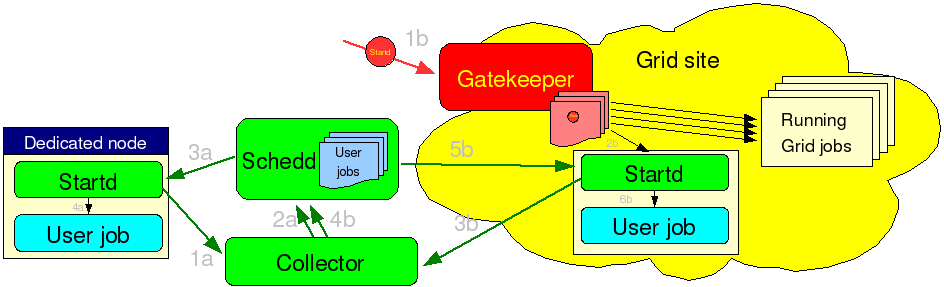
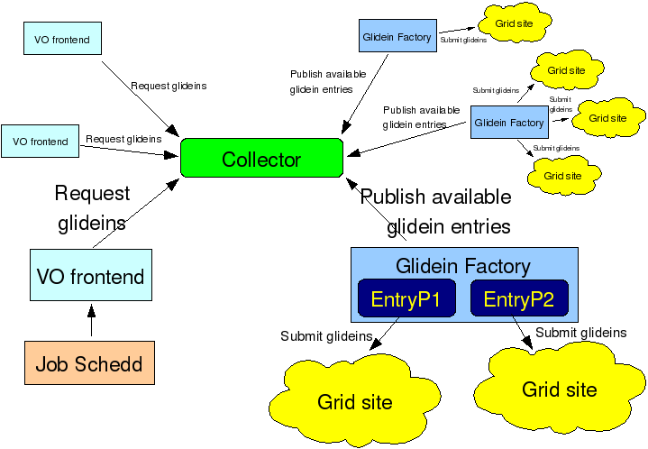
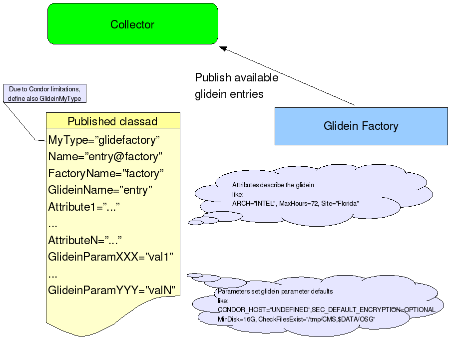
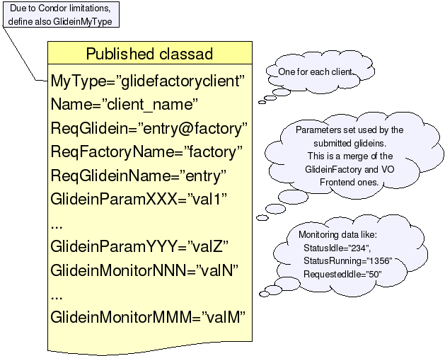
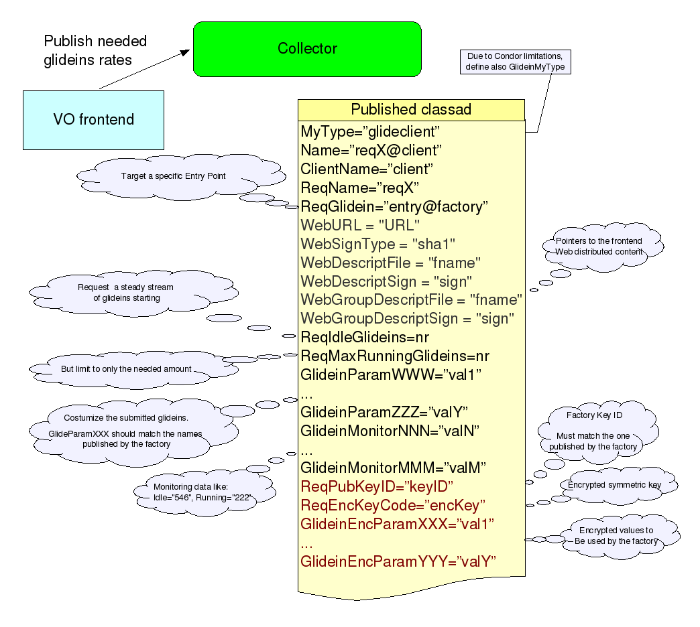

The glideinWMS package holds the Condor glidein based Workload Management System (WMS).
This document describes the glidein based WMS and it's architecture in details. Most of the components of glideinWMS described in this manual can be installed by the installation tool provided with the glideinWMS. Please refer to the installation guide for more details.
As the title says, this WMS is based on glideins. But what are the
glideins?
A glidein is, simply put, a properly
configured Condor
Startd submitted as a Grid job.
Once the glidein starts on a
worker node, it will join the the specified Condor pool, making the
obtained Grid-batch slot a slot in the Condor pool. At this point, a
regular Condor job can start there as if was a dedicated resource.
See the picture below for a schematic overview.

Condor
glideins are a convenient way to expand a Condor pool. Apart from the
task of submitting new glideins as needed, everything else stays
the same as in a dedicated pool.
The glidein based WMS is made of two pieces:
One or more VO frontends
The two pieces perform each a part of the job:
The VO frontends are the ones that know about the VO job specifics and know how many and what kind of glideins are needed.
The two pieces communicate via a common Condor Collector; see the
image below for a schematic view.

A
single WMS (identified by the Condor Collector) can serve multiple
frontends via multiple factories. It is a truly many-to-many system.
However, the current implementation does not support prioritization
between different frontends, so it is best to have only one frontend;
multiple factories will instead work as desired.
More details
can be found
on the VO Frontend page.
In the previous section we described the general architecture of the WMS. Let now have a look at the type of information that the two pieces publish.
A factory publishes one class-ad per glidein kind. The class-ad contains
Plus a list of monitoring values (like how many glideins are already in the queues, etc.)
Look at the picture below for a generic description.

Please
notice that the glidein attributes can be completely arbitrary; the
only predefined attributes are the glidein and factory name, plus the
convention that anything that starts with GlideinParam
is a parameter and anything that starts with GlideinMonitor
is a monitoring attribute.
Once the factory starts
serving frontends, it will publish also another ClassAd for every
frontend served. This ClassAd contains only monitoring information,
and is not used by the glideinWMS itself.
Find below a graphical
representation of these ClassAds.

A VO frontend will obtain the list all available glideins and select the ones that fit its needs, based on the published attributes. For each fitting glidein, a frontend class-ad will be published. Such a class-ad will contain
Plus a list of monitoring values (like how many jobs are currently running, etc.)
Have a look at the picture below for a generic description.

In
the current implementation, the only glidein rate setting parameter
supported is ReqIdleGlideins,
that tells the factory how many idle glideins to keep in the queue at
any given time. Future versions may contain more sophisticated
controls, like the maximum number of glideins to keep in the queue or
the maximum rate at which the glideins should be submitted.
Due to the amount of material available, the documentation is being kept
on the VO Frontend page.
To make a working Glidein-based WMS, you will need to install one or more Condor pools:
If you want, you can merge several of them together, but at least
logically, they are separate, and I would strongly suggest to keep
them separate unless you have just a small system.
Installing
and properly configuring a Condor pool is (unfortunately) a complex
process, and this manual will not attempt to describe all the glory
details. In this manual, it is assumed you have installed a Condor
pool already (see http://www.cs.wisc.edu/condor/
for more information) and only the WMS specific options are
discussed.
Most configuration changes needed by the
Glidein-based WMS regard security; you definitely don't want just
anybody to mess with you pool!
The WMS pool can use
any authentication mechanism you prefer; GSI (i.e. x509), Kerberos,
etc., all work fine for this purpose. There is also nothing to hide,
so encryption can be turned off. However, you do want to make sure
that the information is not tampered with, so you should enable the
integrity checks!
If you happen to know the IP addresses of
all the factories and all the frontends, it is also good practice to
limit the ability to submit new requests to only those nodes ( +
obviously the Collector machine).
Here is a prototype of the
security config:
SEC_DEFAULT_AUTHENTICATION = REQUIRED SEC_DEFAULT_AUTHENTICATION_METHODS = <Your choice here> SEC_DEFAULT_INTEGRITY = REQUIRED HOSTALLOW_WRITE = machine1,machine2, ... ,machineN
For more information about GSI, look at the configuration of the
glidein (user) pool. For all other kinds,
please follow the instructions in the Condor
manual.
To ease monitoring and debugging, it is also
useful to allow unauthenticated read of the information; as said
before, there is nothing to hide. However, be sure you enable this
only for the Collector, and require the factory and the frontend
to authenticate at all times, since this is needed for the integrity
checks to work.
The lines to add, on the Collector machine,
are:
SEC_READ_AUTHENTICATION = OPTIONAL SEC_CLIENT_AUTHENTICATION = OPTIONAL SEC_READ_INTEGRITY = OPTIONAL SEC_CLIENT_INTEGRITY = OPTIONAL
Last, please notice that there is no need for a Negotiator in this pool. All the matching is done by the factory and frontend software itself. (An no need for Startds either.)
The glidein pool relies
heavily on GSI, also known as x509, authentication. The reason for
this is due to the nature of glideins; the Condor Startd is a Grid
job. And thus have a x509 proxy available at startup.
So the
glidein Condor pool must be set up to support at least GSI; other
methods can be used too, to support your local user job submission
policies.
Regarding other security features, integrity checks
should be enabled and encryption should be left as an option for the
transfer of sensitive information in user jobs.
Here is a
prototype of the security config:
SEC_DEFAULT_AUTHENTICATION = REQUIRED SEC_DEFAULT_AUTHENTICATION_METHODS = <local methods>, GSI SEC_DEFAULT_INTEGRITY = REQUIRED SEC_DEFAULT_ENCRYPTION = OPTIONAL
The GSI authentication needs some other parameters to be enabled,
too. See the Condor
manual for the full details.
First of all, you must tell
Condor what kind of proxies you will trust; i.e. you must provide it
with the public keys of all the trusted Certification Authorities
(CAs).
Next, you have to tell condor how it will authenticate
with the other parties. You can use either a host certificate/key
pair or a regular proxy. The glidein will always use a proxy, but all
the other Condor daemons (Collector, Negotiator and Schedd) can use a
host certificate if they are running as root and the machine has the
host certificates installed. Please note that the two methods
are equivalent, as Condor will extract, as needed, a proxy from the
certificate using the provided key.
Last but not least, you
must specify who do you trust. A sensitive sysadmin will want only
the known DNs (Distinguished Names, i.e. the text representation of
the proxy identity) to be allowed to impersonate Condor daemons.
There are two places where this has to be set:
The first one is the so called Grid Mapfile (GRIDMAP); it must list all the DNs Condor will trust. For example:
[root@cmswmshead.fnal.gov] cat grid-mapfile "/DC=org/DC=doegrids/OU=Robots/CN=FNAL CMSWMS Head" condor1 "/DC=org/DC=doegrids/OU=Robots/CN=FNAL CMSWMS Factory1" condor2 "/DC=org/DC=doegrids/OU=Robots/CN=FNAL CMSWMS Frontend1" condor3
Recent condor versions provide also another, more flexible unified
map file (CERTIFICATE_MAPFILE).
It can be use instead of the grid mapfile, and map users from all
supported authentication domains.
For example:
[root@cmswmshead.fnal.gov] cat condor_mapfile GSI "/DC=org/DC=doegrids/OU=Robots/CN=FNAL CMSWMS Head" condor1 GSI "/DC=org/DC=doegrids/OU=Robots/CN=FNAL CMSWMS Factory1" condor2 GSI "/DC=org/DC=doegrids/OU=Robots/CN=FNAL CMSWMS Frontend1" condor3 GSI (.*) anonymous FS (.*) \1
If you use GSI just for the maintenance of the glidein (user) pool,
it should list only the trusted DNs.
Please notice that if you
use GSI for authenticating your users, too, you need to list all of
them in the map file.
The second place is a list of trusted daemon DNs
(GSI_DAEMON_NAME).
Please
notice that all the trusted DNs need to be listed in both places.
Note: If you use gLExec with Condor, you also need to list all the users as trusted daemons. While suboptimal in security terms, it is a current (as of 7.0.0) Condor requirement.
A prototype of the above configuration is:
GSI_DAEMON_DIRECTORY = /opt/condor/certs # Use a Proxy GSI_DAEMON_PROXY = $(GSI_DAEMON_DIRECTORY)/x509_service_proxy # Use a Certificate/Key pair #GSI_DAEMON_CERT = $(GSI_DAEMON_DIRECTORY)/hostcert.pem #GSI_DAEMON_KEY = $(GSI_DAEMON_DIRECTORY)/hostkey.pem GRIDMAP=$(GSI_DAEMON_DIRECTORY)/grid-mapfile GSI_DAEMON_NAME= /DC=org/DC=doegrids/OU=Robots/CN=FNAL CMSWMS Head,\ /DC=org/DC=doegrids/OU=Robots/CN=FNAL CMSWMS Factory1,\ /DC=org/DC=doegrids/OU=Robots/CN=FNAL CMSWMS Frontend1
Last, to ease monitoring and debugging, it is also useful to
allow unauthenticated read of the information, unless you have strict
privacy requirements in your environment.
To enable it, add
the following lines:
SEC_READ_AUTHENTICATION = OPTIONAL SEC_CLIENT_AUTHENTICATION = OPTIONAL SEC_READ_INTEGRITY = OPTIONAL SEC_CLIENT_INTEGRITY = OPTIONAL
As of Condor version 7.1.3 condor also supports a more efficient authentication mechanism between the condor_schedd/condor_shadow and condor_startd/condor_starter. This method uses the match ClaimId as a shared password for authentication between these daemons. Since using a shared secret is much cheaper that using GSI authentication, this should be used every time it is feasible.
SEC_ENABLE_MATCH_PASSWORD_AUTHENTICATION = True
Obviously, this will only work with Condor versions 7.1.3 and above.
Please note that you do not need to worry about glidein security
configuration at a global level; the glidein
factory will make sure the settings are correct in the glideins.
The glideinWMS comes with 4 types of monitoring facilities:
The glideinWMS creates a standard condor pool, so users can monitor their jobs using the standard Condor tools, like condor_q and condor_status.
The administrator can also install graphical tools like the Condor View.
The glideinWMS also provides pseudo interactive monitoring functionalities; a user can run short lived commands alongide any already running job in the queue.
To run a pseudo interactive command, move into
glideinWMS/tools
and run
./glidein_interactive.py jobid cmdline
There are also a set of useful often used commands that you may want to use:
glidein_ps.py jobid [opts]
The glidein factory also produces a large amount of web accessible information.
Look into
http://gfactory_node:http_port/glidefactory/monitor/glidein_factory_name/
For most begginner users, start at
http://gfactory_node:http_port/glidefactory/monitor/glidein_factory_name/total/0Status.hour.large.html
and go on from there.
A system administrator can also monitor the glideinWMS status using text tools.
Move into
glideinWMS/tools
and run either
./wmsXMLView.py
or
./wmsTxtView.py [Entries|Sites|Gatekeepers]
RepositoryCVSROOTcvsuser@cdcvs.fnal.gov:/cvs/cd Package(s)glideinWMS |
Author(s)Since Aug. 14th - Igor Sfiligoi (Fermilab Computing Division) |